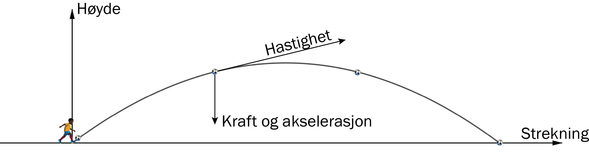
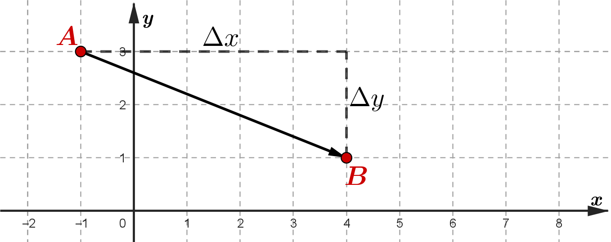
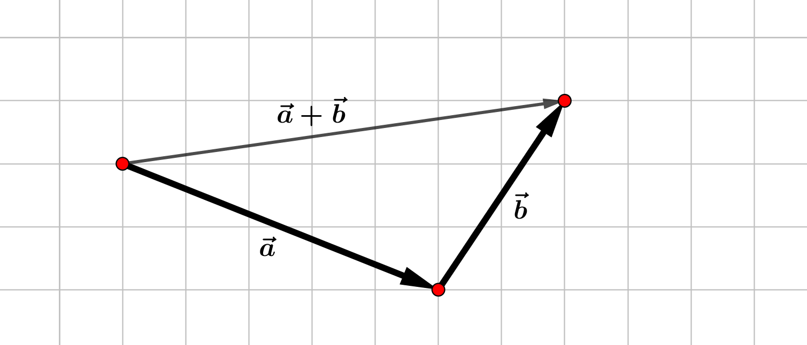
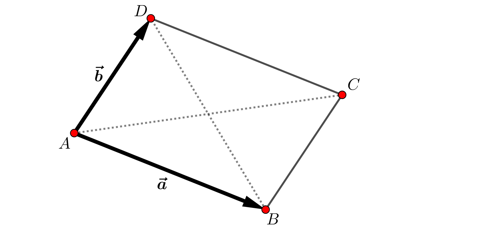
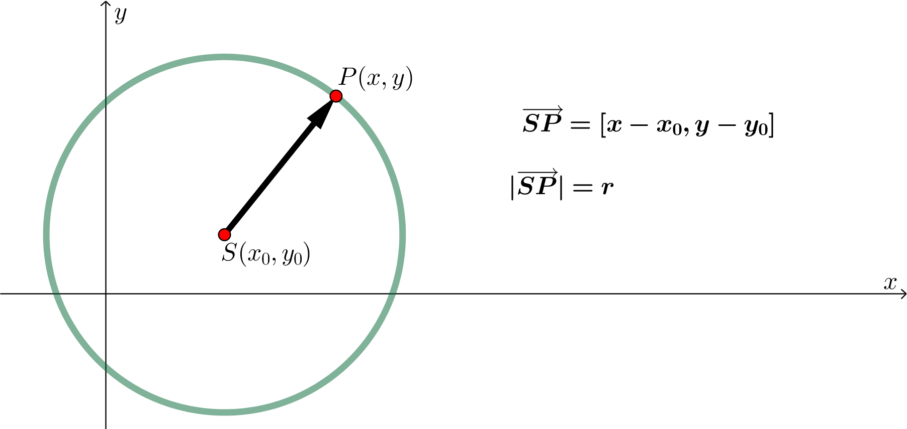
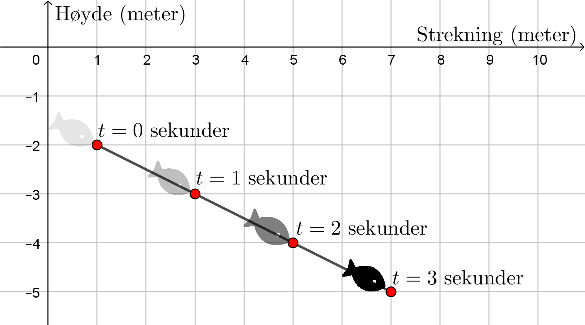
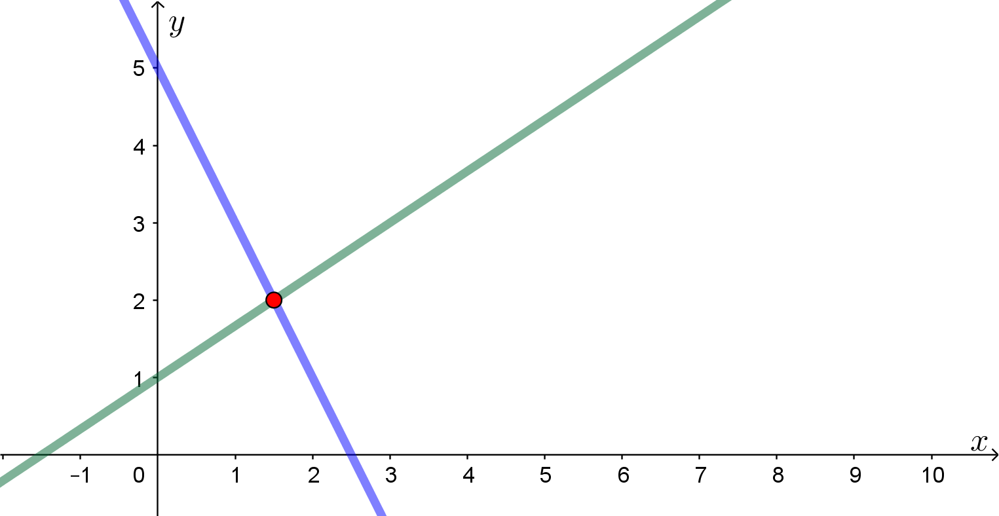
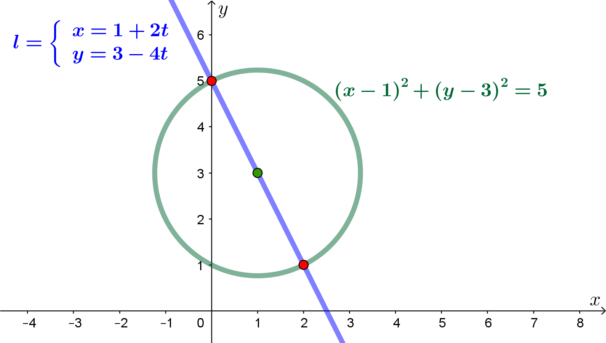
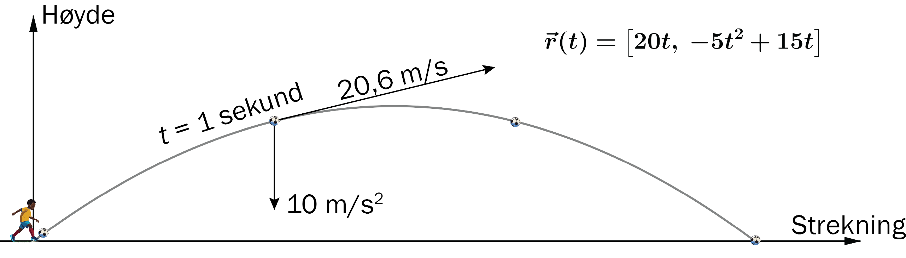

En vektor har både en størrelse (lengde) og retning. Eksempler på vektorer er hastighet, kraft og akselerasjon.

En vektor forteller oss hvor langt vi går i \(x\)- og \(y\)-retning.
Bestem vektoren og lengden av vektoren mellom \(A(-1,3)\) og \(B(4,1)\).

Vi leser av forflytningen:
\[ \overrightarrow{AB}=[\Delta x,\Delta y]=[5,-2] \]Vi bruker Pytagoras:
\[ |\overrightarrow{AB}|=\sqrt{5^2+2^2}=\sqrt{29} \]En størrelse som ikke er en vektor kaller vi en skalar. Lengden av vektoren er et eksempel på en skalar-størrelse.
Gitt to vektorer \(\vec a=[5,-2]\) og \(\vec b=[2,3]\). Bestem \(\vec a+\vec b\).

Vis at diagonalene i et parallellogram skjærer hverandre på midten.

Hvis \(M\) er midtpunktet på \(AC\), så er
\[ \overrightarrow{AM} = \frac12\overrightarrow{AC} = \frac12(\vec a+\vec b) \]Hvis \(N\) er midtpunktet på \(BD\), så er
\[ \begin{aligned} \overrightarrow{AN} &= \overrightarrow{AB}+\frac12\overrightarrow{BD} \\ &= \vec a+\frac12(-\vec a+\vec b) \\ &= \frac12(\vec a+\vec b) = \overrightarrow{AM} \end{aligned} \]Dermed er \(M=N\), altså skjærer diagonalene hverandre på midten.
To vektorer \(\vec u=[u_x,u_y]\) og \(\vec v=[v_x,v_y]\) er parallelle dersom
\[ \frac{\Delta y}{\Delta x} = \frac{u_y}{u_x} = \frac{v_y}{v_x} \]To parallelle vektorer kan skrives som \( \vec u=k\cdot \vec v \)
Dersom \(\vec u\) og \(\vec v\) er parallelle, skriver vi \(\vec u \parallel \vec v\).
\(\vec v=[3,6]\parallel \vec u=[1,2]\), fordi \( \vec v=3\vec u \)
Bestem \(x\) slik at \(\vec u=[1,-2]\parallel \vec v=[x,3]\).
I et parallellogram \(ABCD\) er \(A(1,2)\), \(B(3,-1)\) og \(C(2,4)\). Bestem koordinatene til \(D\).
Dermed er \(D(0, 7)\).
Skalarprodukt er lengden av den ene vektoren multiplisert med projeksjonen av den andre vektoren ned på den første.
På vektorform regner vi skalarproduktet slik:
\[ [a_x,a_y]\cdot[b_x,b_y] = a_xb_x+a_yb_y \]Fra definisjonen ser vi at skalarproduktet er null dersom vinkelen mellom vektorene er \(90^\circ\). Skalarproduktet er positivt dersom vinkelen er under \(90^\circ\), og negativt dersom vinkelen er over \(90^\circ\).
Bestem vinkelen mellom vektorene \([3,1]\) og \([-3,3]\).
Avstanden fra sentrum \(S(x_0,y_0)\) til et tilfeldig punkt \(P(x,y)\) på sirkelen er lik radien.

En sirkel har radius 3 og sentrum i punktet \(S(2,1)\). Bestem skjæringspunktene mellom \(x\)-aksen og sirkelen.
Likningen for sirkelen er
\[ (x-2)^2+(y-1)^2=3^2 \]Sirkelen skjærer \(x\)-aksen når \(y=0\):
\[ \begin{aligned} (x-2)^2+(0-1)^2&=3^2\\ (x-2)^2+1&=9\\ x-2&=\pm\sqrt8\\ x&=2\pm\sqrt8 \end{aligned} \]En rett linje gjennom \(P(x_0, y_0)\) med retningsvektor \(\vec{r} = [a, b]\) kan skrives som
\[ \begin{cases} x=x_0+a \cdot t\\ y=-y_0 + b \cdot t \end{cases} \]En parameterframstilling er en måte å fremstille en linje på ved hjelp av en parameter, \(t\). Som regel representerer \(t\) tid.
En fisk svømmer på skrått nedover. Etter \(t\) sekunder er posisjonen
\[ \begin{cases} x=1+2t\\ y=-2-t \end{cases} \]Enhetene på aksene er meter. \(x\) gir posisjonen horisontalt, og \(y\) gir posisjonen vertikalt.

Farten til fisken er den deriverte av posisjonen:
\[ x'(t)=2 \quad,\quad y'(t)=-1 \] \[ \vec v=[2,-1] \quad\text{og}\quad |\vec v|=\sqrt{2^2+(-1)^2}=\sqrt5 \]Fisken svømmer på skrått nedover med farten \(\sqrt5\) m/s.
To linjer er gitt ved
\[ l= \begin{cases} x=1+2t\\ y=3-4t \end{cases} \quad\text{og}\quad m= \begin{cases} x=3t\\ y=1+2t \end{cases} \]Bestem skjæringspunktet mellom linjene.
Vi bytter parameteren på linjen \(m\) til \(s\), fordi linjene ikke nødvendigvis er i samme punkt for samme \(t\)-verdi.
\[ \begin{aligned} 1+2t&=3s\\ 3-4t&=1+2s \end{aligned} \]Fra den første likningen får vi
\[ t=\frac{3s-1}{2} \]Setter vi dette inn i den andre likningen, får vi
\[ \begin{aligned} 1+2s&=3-4\cdot\frac{3s-1}{2}\\ 1+2s&=3-6s+2\\ 8s&=4\\ s&=\frac12 \end{aligned} \]Vi setter \(s=\frac12\) inn i linjen \(m\):
\[ \left(\frac32,2\right) \]
En linje og en sirkel er gitt ved
\[ l= \begin{cases} x=1+2t\\ y=3-4t \end{cases} \quad\text{og}\quad (x-1)^2+(y-3)^2=5 \]Bestem skjæringspunktene mellom linjen og sirkelen.
Vi setter \(x\) og \(y\) fra linjen inn i sirkelen:
\[ \begin{aligned} (1+2t-1)^2+(3-4t-3)^2&=5\\ (2t)^2+(-4t)^2&=5\\ 4t^2+16t^2&=5\\ 20t^2&=5\\ t^2&=\frac14\\ t&=\pm\frac12 \end{aligned} \]Vi setter \(t\)-verdiene inn i linjen:
\[ \begin{cases} x=1+2\cdot\left(\pm\frac12\right)=2 \;\vee\; 0\\ y=3-4\cdot\left(\pm\frac12\right)=1 \;\vee\; 5 \end{cases} \]Skjæringspunktene er \((2,1)\) og \((0,5)\).

En vektorfunksjon er en vektor fra origo til posisjonen til en partikkel.
\[ \vec r(t)= \left[ x(t), y(t) \right] \]Akkurat som en parameterfremstilling, så gir vektorfunksjoner linjer eller kurver i koordinatsystemet.
I praksis kan vi tenke på en vektorfunksjon som et dynamisk punkt; Et punkt som flytter seg når \(t\) endrer seg.
Fartsvektoren er gitt ved
\[ \vec v(t)=\vec r'(t) \]Akselerasjonsvektoren er gitt ved
\[ \vec a(t)=\vec v'(t)=\vec r''(t) \]En ball sparkes på skrått. Etter \(t\) sekunder er posisjonen gitt ved
\[ \vec r(t)=[20t,-5t^2+15t] \]Enhetene på aksene er meter. Bestem posisjonen, farten og akselerasjonen etter ett sekund.
Banefarten etter ett sekund er
\[ \sqrt{20^2+5^2}=\sqrt{425}\text{ m/s} \]Størrelsen til akselerasjonen er \(10\text{ m/s}^2\).
